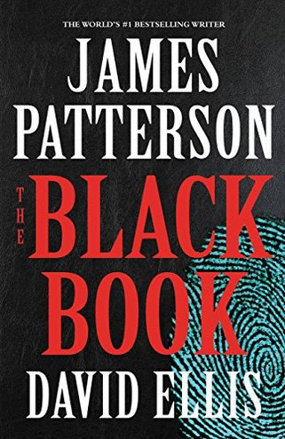
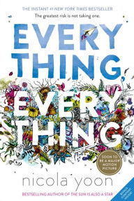

Fiction Books:-
 A fictional book is a book (created specifically for a work of fiction) that sometimes provides the basis of the plot of a story, a common thread in a series of books, or the works of a particular writer or canon of work. A fictional book may also be used as a mode of conceit to illustrate a story within a story.The Necronomicon in H. P. Lovecraft's books serves as a repository of recondite and evil knowledge in many of supposedly written by the "Mad Arab Abdul al-Hazred," who was book is real. See More...
Non-Fiction Books:-
Non-fiction or nonfiction is content (sometimes, in the form of a story) whose creator, in good faith, assumes responsibility for the truth or accuracy of the events, people, or information presented.In contrast, a story whose creator explicitly leaves open if and how the work refers to reality is usually classified as fiction. which may be presented either objectively is traditionally one of the two main divisions of narratives (and, specifically, prose writing), the other traditional division being fiction. See More...
Teen Fiction Books:-
 Teen fiction or nonfiction is content whose creator, in good faith, assumes responsibility for the truth or accuracy of the events, people, or information presented.In contrast, a story whose creator explicitly leaves open if and how the work refers to reality is usually classified as fiction. two main divisions of narratives (and, specifically, prose writing), the other traditional division being fiction, which contrasts with dealing in information, and characters expected to be partly or largely imaginary. See More...
Children's Books:-
Books specifically for children existed by the 17th century. Before that, books were written mainly for adults – although some later became popular with children. In Europe, Gutenberg's invention of the printing press around 1440 made possible mass production of books, though the first printed books were quite expensive and remained so for a long time. Gradually, however, improvements in printing advance technology shavvy ,technology lowered the costs of publishing and made books more affordable to the working classes. See More...